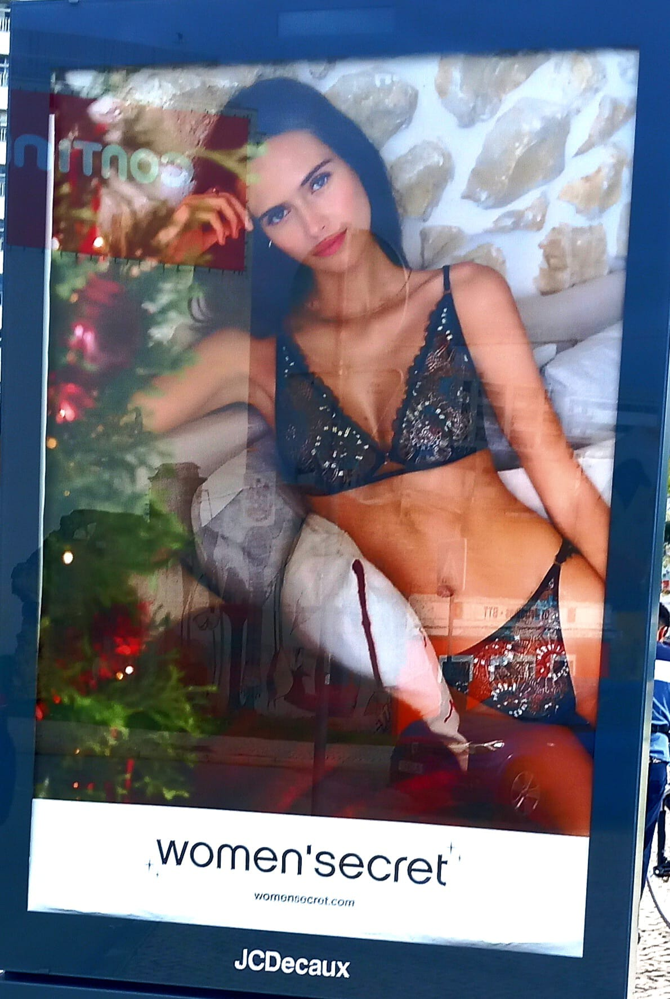

Anúncio da Women's WomenSecret
Este anúncio da Women's Secret, que se situa perto do colégio, apresenta uma falácia.
A falácia usada é o apelo ao desejo(ad concupiscentiam).
Esta falácia consiste no aproveitamento de apetites sensuais ou ambições materiais.
Neste caso, a falácia é utilizada para atraír compradores, através da "promessa" de que o seu corpo será tão bonito como o da mulher no anúncio, se usarem produtos da Women's Secret.
